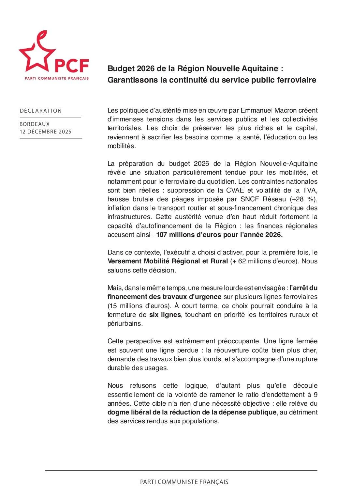
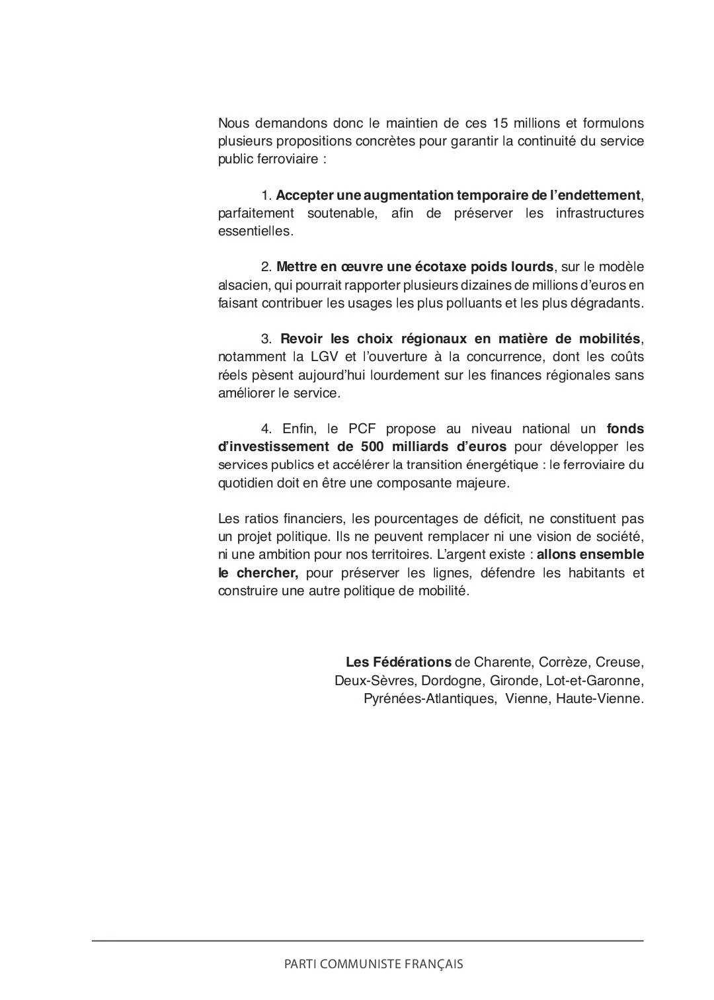

Déclaration cosignée
Nouvelle-Aquitaine. Dix fédérations du PCF défendent le train du quotidien
Date indiquée par Facebook · 15 décembre 2025
Repères éditoriaux
Avec neuf autres fédérations communistes de Nouvelle-Aquitaine, nous avons demandé le maintien des 15 millions d’euros destinés aux travaux urgents sur les lignes régionales. Dans la déclaration du 12 décembre, nous alertions sur le risque de fermeture de six lignes et proposions des moyens pour maintenir le train du quotidien, notamment une écotaxe poids lourds.
Texte conservé avec la publication
Déclaration concernant le budget 2026 de la région Nouvelle-Aquitaine.
Lire la déclaration intégrale du 12 décembre 2025
PARTI COMMUNISTE FRANÇAIS
DÉCLARATION
BORDEAUX
12 DÉCEMBRE 2025
Budget 2026 de la Région Nouvelle Aquitaine :
Garantissons la continuité du service public ferroviaire
Les politiques d’austérité mise en œuvre par Emmanuel Macron créent d’immenses tensions dans les services publics et les collectivités territoriales. Les choix de préserver les plus riches et le capital, reviennent à sacrifier les besoins comme la santé, l’éducation ou les mobilités.
La préparation du budget 2026 de la Région Nouvelle-Aquitaine révèle une situation particulièrement tendue pour les mobilités, et notamment pour le ferroviaire du quotidien. Les contraintes nationales sont bien réelles : suppression de la CVAE et volatilité de la TVA, hausse brutale des péages imposée par SNCF Réseau (+28 %), inflation dans le transport routier et sous-financement chronique des infrastructures. Cette austérité venue d’en haut réduit fortement la capacité d’autofinancement de la Région : les finances régionales accusent ainsi –107 millions d’euros pour l’année 2026.
Dans ce contexte, l’exécutif a choisi d’activer, pour la première fois, le Versement Mobilité Régional et Rural (+ 62 millions d’euros). Nous saluons cette décision.
Mais, dans le même temps, une mesure lourde est envisagée : l’arrêt du financement des travaux d’urgence sur plusieurs lignes ferroviaires (15 millions d’euros). À court terme, ce choix pourrait conduire à la fermeture de six lignes, touchant en priorité les territoires ruraux et périurbains.
Cette perspective est extrêmement préoccupante. Une ligne fermée est souvent une ligne perdue : la réouverture coûte bien plus cher, demande des travaux bien plus lourds, et s’accompagne d’une rupture durable des usages.
Nous refusons cette logique, d’autant plus qu’elle découle essentiellement de la volonté de ramener le ratio d’endettement à 9 années. Cette cible n’a rien d’une nécessité objective : elle relève du dogme libéral de la réduction de la dépense publique, au détriment des services rendus aux populations.
Nous demandons donc le maintien de ces 15 millions et formulons plusieurs propositions concrètes pour garantir la continuité du service public ferroviaire :
1. Accepter une augmentation temporaire de l’endettement, parfaitement soutenable, afin de préserver les infrastructures essentielles.
2. Mettre en œuvre une écotaxe poids lourds, sur le modèle alsacien, qui pourrait rapporter plusieurs dizaines de millions d’euros en faisant contribuer les usages les plus polluants et les plus dégradants.
3. Revoir les choix régionaux en matière de mobilités, notamment la LGV et l’ouverture à la concurrence, dont les coûts réels pèsent aujourd’hui lourdement sur les finances régionales sans améliorer le service.
4. Enfin, le PCF propose au niveau national un fonds d’investissement de 500 milliards d’euros pour développer les services publics et accélérer la transition énergétique : le ferroviaire du quotidien doit en être une composante majeure.
Les ratios financiers, les pourcentages de déficit, ne constituent pas un projet politique. Ils ne peuvent remplacer ni une vision de société, ni une ambition pour nos territoires. L’argent existe : allons ensemble le chercher, pour préserver les lignes, défendre les habitants et construire une autre politique de mobilité.
Les Fédérations de Charente, Corrèze, Creuse, Deux-Sèvres, Dordogne, Gironde, Lot-et-Garonne, Pyrénées-Atlantiques, Vienne, Haute-Vienne.
PARTI COMMUNISTE FRANÇAIS


Sources
Archive rouge · export Facebook · AR-0002-FB-00929
À lire aussi · Le PCF alerte sur les conséquences des coupes budgétaires pour les associations